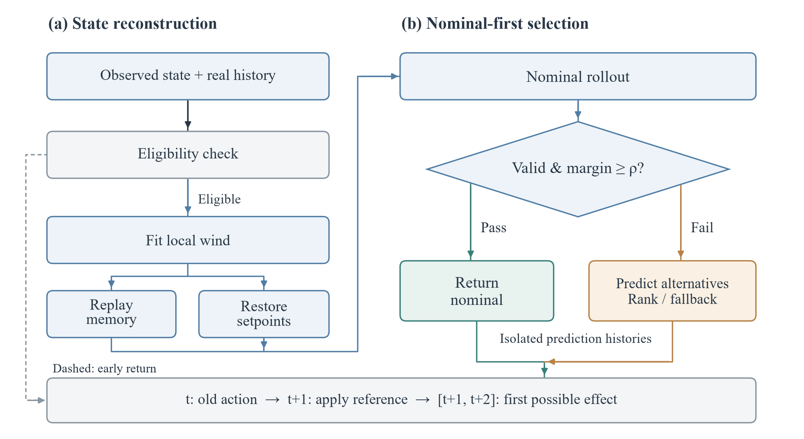
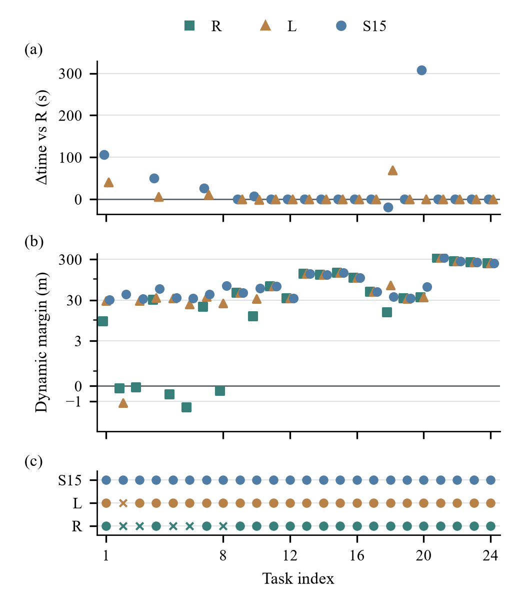
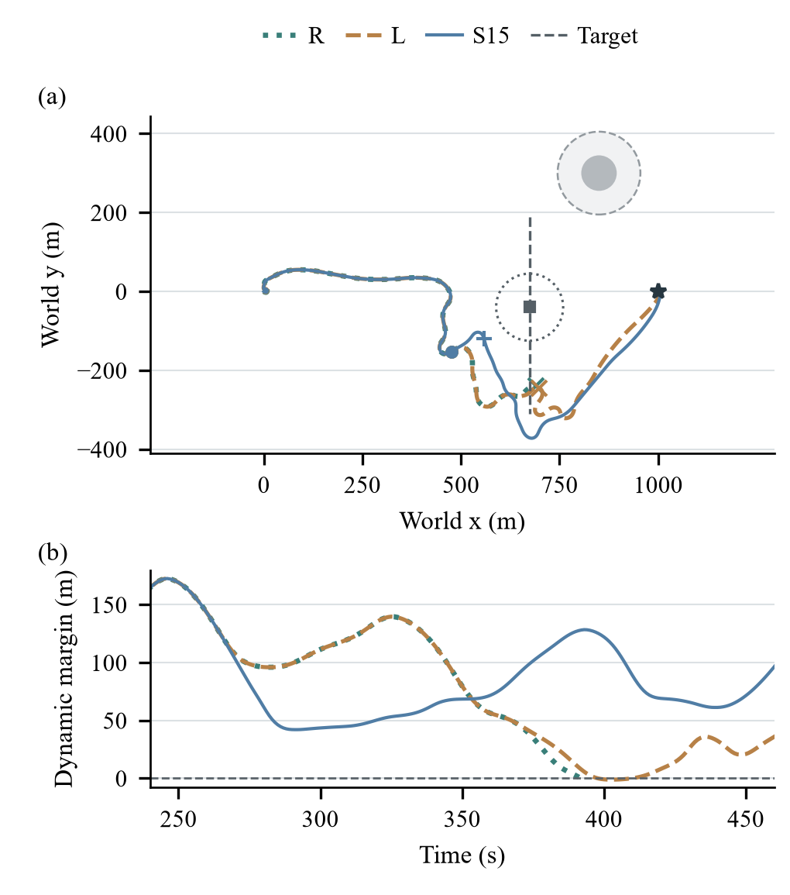
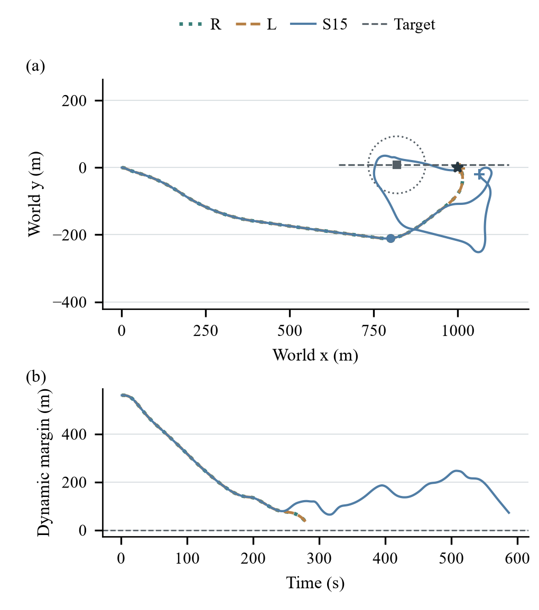
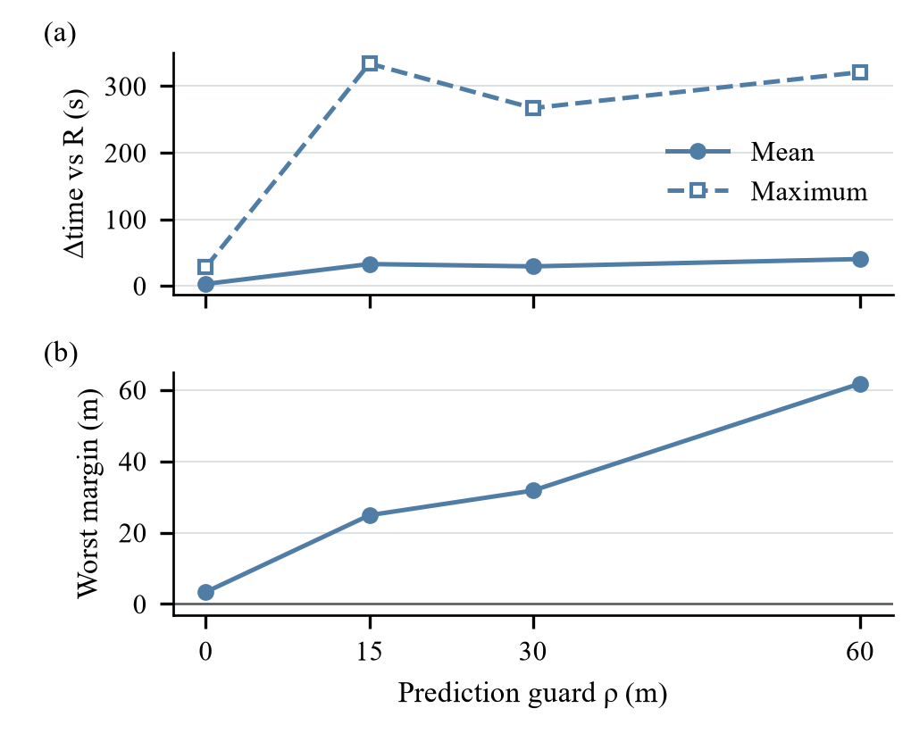
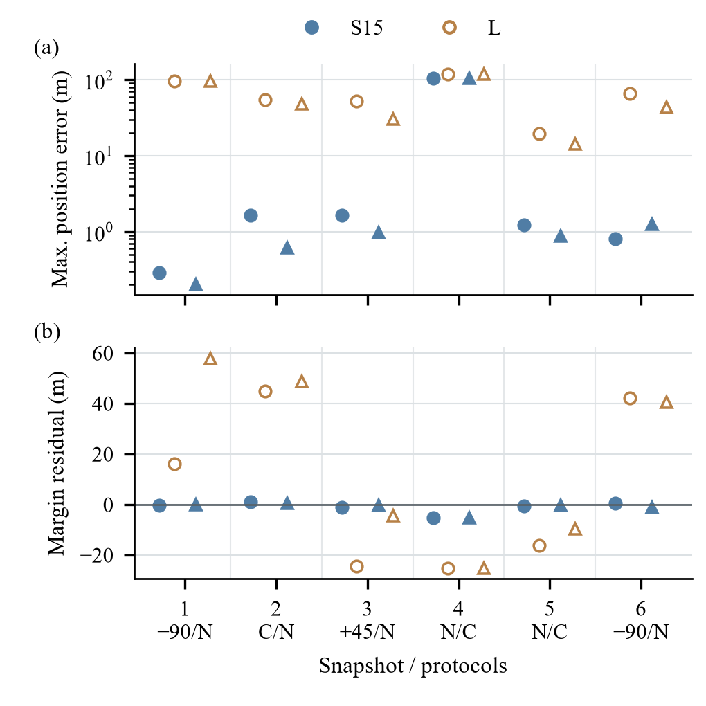

Fig. 1. Nominal-first prediction and actual execution. A valid, integration-successful nominal rollout meeting the guard returns without predicting alternatives. Memory replay and command accumulation restore distinct states; predicted histories stay isolated. The old action executes first, a changed reference applies at t+1, and its first possible effect is t+1 to t+2. Only executed feedback updates real history.


Fig. 2. All 24 matched tasks. (a) Time differences use 19 common-safe pairs per predictor; missing points are failed pairs, not zero cost. (b) Every actual dynamic margin; the symmetric-log axis is linear for |margin|≤3 m. (c) Circles: safe completion; crosses: failure. Indices 1–8: pressure; 9–12: crossing; 13–16: overtaking; 17–20: endpoint; 21–24: non-conflict.


Fig. 3. Unique new-confirmation L incursion: complete R/L/S15 and target tracks. Run durations are 392/566/519 s. Circles/square mark synchronized positions at 260 s; the dotted circle is the target’s 85 m exclusion boundary. Plus/cross marks identify minimum-margin endpoints. The gray disk is the static entity; its dashed ring adds 60 m. The lower panel shows the encounter interval.


Fig. 4. Adverse endpoint task: S15 takes 587 s versus 279 s for safe R and L, adding 308 s. R and L coincide. Complete actual tracks and synchronized target motion are shown. Circles/square mark 200 s; the dotted circle is the exclusion boundary then. The lower panel reports synchronized clearance throughout each run.


Fig. 5. Guard sensitivity on twelve prespecified development tasks; original 30 m results are reused. (a) Time differences use ten common-safe pairs. (b) Worst actual margin uses all twelve tasks. Larger guard need not improve both outcomes.


Fig. 6. Predictions versus actual fixed-protocol execution, grouped by six source snapshots. Circle/triangle denote two protocols; filled/open markers denote S15/L. N: nominal; C: continuation; signed angles: side protocols. Margin residual is predicted minus actual. Common intervals are ten 60 s and two 58 s. Duplicate nominal/continuation at snapshot 4 is one source state, not independent evidence.

Table I. Matched 24-task results. Δt is relative to R on common-safe pairs; CPU is cumulative episode CPU, not navigation time.
| Metric | R | L | S15 |
|---|---|---|---|
| Safe /24 | 19 | 23 | 24 |
| Gain/loss vs R | — | 4/0 | 5/0 |
| Common-safe n | — | 19 | 19 |
| Mean Δt (s) | — | +6.63 | +25.16 |
| Median Δt (s) | — | 0 | 0 |
| Maximum Δt (s) | — | +69 | +308 |
| Episode CPU (s) | 270.68 | 378.44 | 2133.23 |
Table II. Safe completions by prespecified family. Pressure changes geometry, wind and static context jointly.
| Family | n | R | L | S15 |
|---|---|---|---|---|
| Combined pressure | 8 | 3 | 7 | 8 |
| Crossing | 4 | 4 | 4 | 4 |
| Overtaking | 4 | 4 | 4 | 4 |
| Endpoint | 4 | 4 | 4 | 4 |
| Non-conflict | 4 | 4 | 4 | 4 |
| Total | 24 | 19 | 23 | 24 |
Table III. Guard sensitivity; common-safe Δt is relative to R. True safety is unchanged.
| ρ (m) | Safe /12 | Worst dynamic (m) | Δt median/max (s) |
|---|---|---|---|
| 0 | 12 | 3.35 | 0.00/28.00 |
| 15 | 12 | 24.88 | 0.00/334.00 |
| 30 | 12 | 31.78 | 0.00/267.00 |
| 60 | 12 | 61.77 | 0.00/321.00 |
Table S1. Policy input ordering, before normalization.
| Index | Quantity | Unit / frame |
|---|---|---|
| 0, 1 | x, y | m, active reference frame |
| 2 | Roll | rad |
| 3 | Wrapped heading minus frame angle | rad, active reference frame |
| 4, 5 | Surge, sway | m/s, body frame |
| 6, 7 | Roll rate, yaw rate | rad/s |
| 8, 9 | Actual sail angle, actual rudder angle | rad |
| 10 | Previous minus current distance to the active reference | m; zero at the initial state |
| 11 | Previous minus current absolute x-distance to local x=500 | m; zero at the initial state |
| 12, 13 | Active reference coordinates | (500,0) m |
| 14, 15 | First encoded obstacle distance, relative bearing | m, rad relative to actual vessel heading |
| 16, 17 | Second encoded obstacle distance, relative bearing | m, rad relative to actual vessel heading |
Table S2. Historical safe completions, reported separately. *Overlaps R8; no pooled total.
| Evidence group | n | R | S15 | S60 | NH |
|---|---|---|---|---|---|
| R8 short | 30 | 28 | 30 | 30 | — |
| R8 long | 4 | 3 | 4 | 4 | — |
| R10 seen* | 13 | 11 | 13 | 13 | 9 |
| R10 new | 12 | 12 | 12 | 12 | 11 |
Table S3. The six source snapshots and protocols plotted in main-paper Fig. 6.
| Snapshot | Source / time | Circle protocol | Triangle protocol | Common time |
|---|---|---|---|---|
| 1 | r8new_mixed_pressure_2 / 149 s | turn-90 | nominal | 60/60 s |
| 2 | r8new_mixed_pressure_4 / 228 s | continue | nominal | 60/60 s |
| 3 | r10new_endpoint_0 / 247 s | turn45 | nominal | 58/58 s |
| 4 | r8new_endpoint_1 / 341 s | nominal | continue | 60/60 s |
| 5 | r8new_nonconflict_0 / 56 s | nominal | continue | 60/60 s |
| 6 | r10new_mixed_pressure_0 / 157 s | turn-90 | nominal | 60/60 s |
Table S4. Primary confirmation scene-generation envelope.
| Family (n) | Initial target position (m) and velocity (m/s) | Base wind (degrees) | Static context |
|---|---|---|---|
| Pressure (8) | q=(x,sT), x∈[620,710], T∈[185,230]s, s∈[.65,.95]; v=(0,−s) | [115,135] | Circle center(850,300), entity radius45m |
| Crossing (4) | q=(x,−sT), x∈[420,540], T∈[140,220]s; v=(0,s), s∈[.65,.95] | [45,80] | None |
| Overtaking (4) | q=(x,y), x∈[230,300], y∈[−15,15]; v=(s,0), s∈[.65,.95] | [45,80] | None |
| Endpoint (4) | q=(x,y), x∈[610,650], y∈[−15,15]; v=(s,0), s∈[.8,1.0] | [45,80] | None |
| Non-conflict (4) | q=(x,±y), x∈[500,600], y∈[340,390]; v=(s,0), s∈[.65,.95] | [45,80] | None |